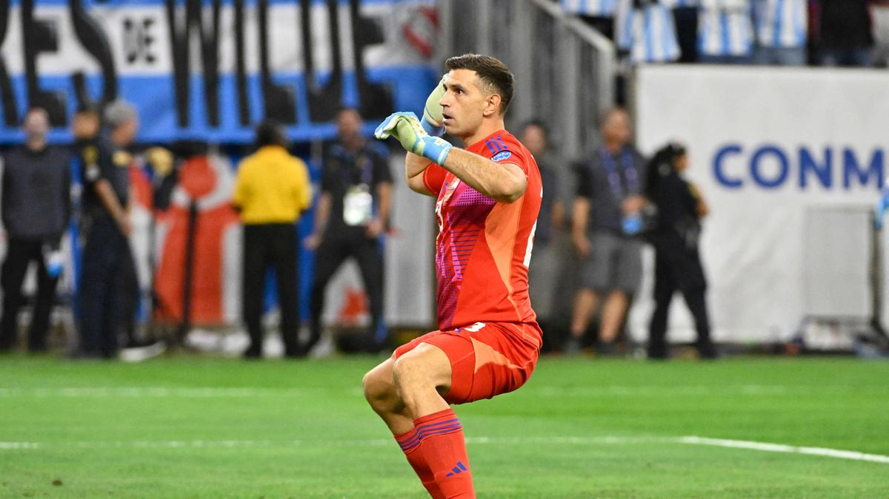
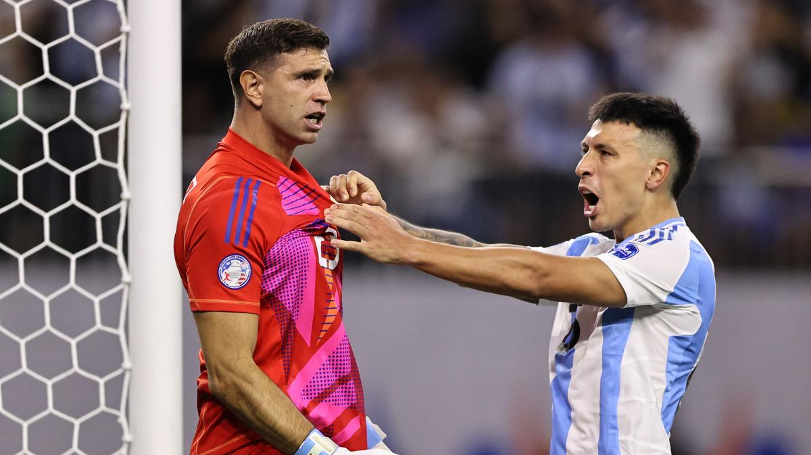

Argentina vs Ecuador highlights, ARG 1-1 ECU, Copa America 2024: Albiceleste win penalty shootout (4-2) to qualify for semis
ARG vs ECU: Highlights from the Argentina vs Ecuador Copa America 2024 quarterfinal match from the NRG Stadium in Houston, Texas.
Updated : Jul 05, 2024 10:17 IST
Team Sportstar
Players of Argentina celebrate defeating Ecuador in a penalty shootout in a Copa America quarterfinal match in Houston, Thursday, July 4, 2024. | Photo Credit: AP
Catch Sportstar’s highlights of the Argentina vs Ecuador Copa America 2024 quarterfinal match from the NRG Stadium in Houston, Texas. This was Aneesh Dey taking you through all the pre-match buildup and bringing you minute-by-minute updates from the clash.
Key Updates
- Argentina through to the semis!
- HALF-TIME!
- 35’ GOOAL! ARG 1-0 ECU! LISANDRO MARTINEZ SCORES!
- KICK-OFF
- Argentina vs Ecuador starting line-ups - Lionel Messi starts!
July 05, 2024 08:53
Match report!

Copa America 2024: Argentina beats Ecuador on penalties to advance into semifinals
Argentina beat Ecuador 4-2 on penalties on Thursday at the NRG Stadium in the Copa America 2024 quarterfinal. This win booked the defending champion’s berth in the semifinals for the fifth consecutive time in the competition.
July 05, 2024 08:52
Find out Argentina’s semifinal opponent
